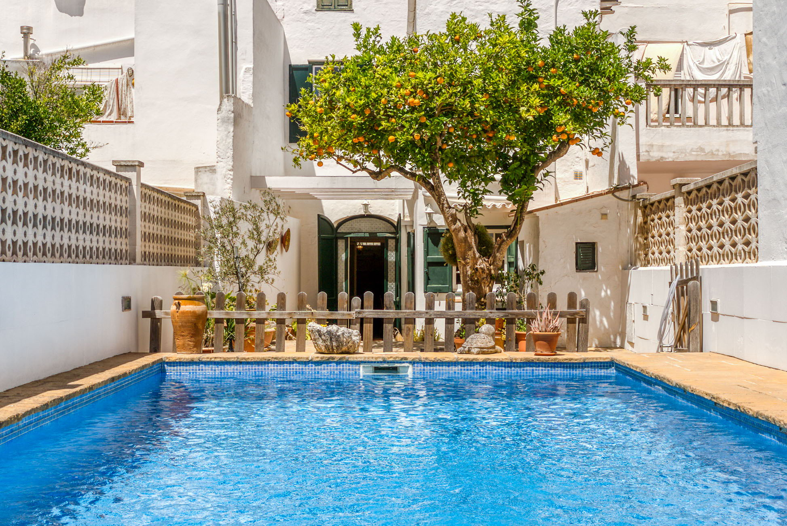

€985.000
Centre històric, Mahón, Menorca
Open the listingRare historic character with a private garden pool in the heart of Mahón: built ~1884–1886, renovated 1986, original essence kept across 327 m² and five bedrooms. Under €1M for centre-town history plus outdoor pool living — bargains hard to find in Mahón's old core.
Opened 4 Sep 2026. Asking €985,000. E&V Property ID W-04A6UG. Specs: 5 bed / 3 bath (incl. guest WC) / ~327 m² / ~218 m² plot / year 1886. Habitable now. Not a fixer.